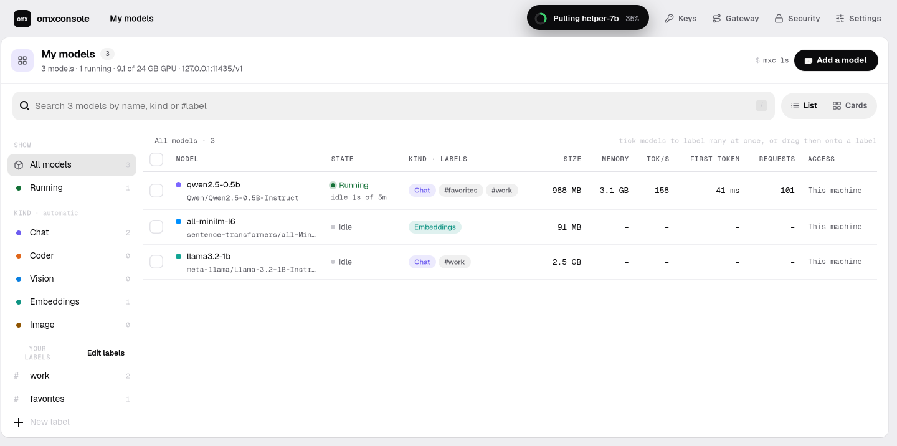
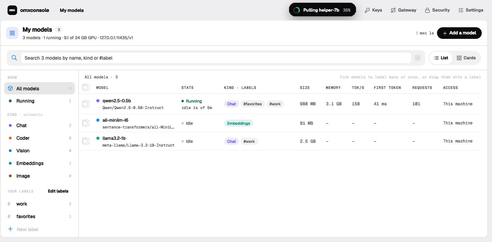
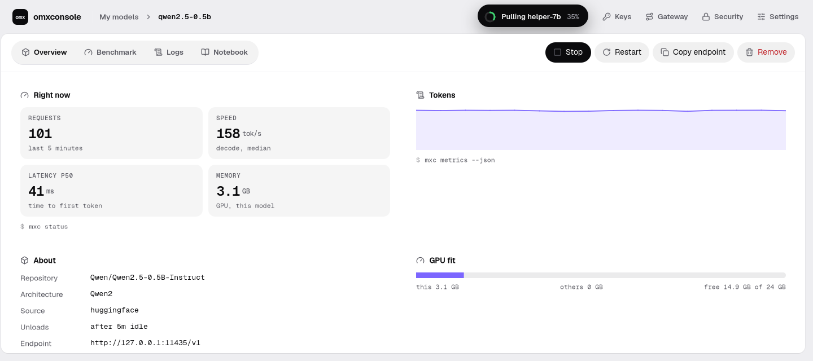

The console is an omxcode app.
The same pages, rewritten in Mojo with omxcode's components. It talks to the server over plain HTTP, like any other client.

- 📡 Same server, same API.It polls the server's local
/admin/*routes every 3 seconds and draws the replies. - 🎯 99 % the same.On the web, all 20 screens match the original JavaScript console to at least 99.2 % of pixels.
- 🧱 Only components.A lint fails the app if it sets a colour, font or size. The 31 modules it needed went into omxcode.



omxcode repo · examples/console/api.mojo, app.mojo · docs/goals/33-report.md · the server still ships its JavaScript console at /console today